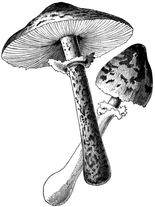

COUPLE
(dés-amour)
"Ne vous fiez pas aux couples qui se tiennent par la main. S'ils ne se lâchent pas, c'est parce qu'ils ont peur de s'entre-tuer." Groucho MARX
Les relations de couple ne sont pas faciles. L’amour n’est pas facile. Ne croyez pas ceux qui vous disent que l’amour véritable est toujours facile. Ce n’est pas le cas et c’est normal. Rien de ce qui en vaut la peine dans la vie n’est facile. Je ne sais pas si vous partagez ce regard avec moi mais il faut vraiment se battre pour l’amour. Parce que s’il est une chose qui en vaille la peine dans la vie, c’est bien l’amour car il unifie et stabilise.
Qu’est-ce que l’amour ? Si nous nous appuyons sur la définition la plus fondamentale et la plus riche de développements de ce fait qui est celle qu’en donne SPINOZA, soit " la joie accompagnée de l’idée d’une cause extérieure", une telle formulation, parce qu’elle ouvre vers un nombre infini d’objets, devrait rendre vaine la question ci-dessus. Car la cause extérieure pouvant être aussi bien soi-même, une autre personne, un objet inanimé ou une idée abstraite, il n’y a pas lieu dès lors de s’interroger sur la capacité de "sublimer" l’amour, c’est-à-dire la joie que provoque la représentation idéique d’un objet. Aussi, c’est davantage à une propriété qui découle de la définition de l’amour, soit la nécessaire présence de cet objet. L’amour est la satisfaction que ressent celui qui aime en présence de la chose aimée, et qui fortifie ou du moins favorise la joie de celui qui aime. Si on entend par "présence" la volonté de se joindre à la chose aimée, comment penser cette jonction ?
Si le couple est un espace privilégié pour l'amour et ses représentations, ses jonctions comme la tendresse, le soutien et la confiance mutuelle, il comporte son lot de discorde, désaccord et conflit. Qu’il s’agisse des querelles quotidiennes ou bien des crimes qu’on appelle "passionnels", la chose est entendue : un couple, ça se chamaille aussi, ça s’engueule parfois, ça se blesse, s'esquinte et s'entretue occasionnellement. La littérature, le théâtre ou la chanson en livrent maints exemples, et même les programmes télévisuels se régalent des mœurs matrimoniales depuis la nuit des temps cathodiques. Le couple est tout sauf un idéalisme.
Plus le duo affiche d’années de vie commune, plus "l’enveloppe couple" est difficile à briser. Et il est à considérer qu'un couple peut arriver au bout de son cycle de vie pour de multiples raisons. L’un a évolué, l’autre différement ou pas. Les ressentiments se sont accumulés, générant un passif devenu supérieur au plaisir d’être ensemble. Ou encore, il est possible que l’un ait eu besoin de s’appuyer sur l’autre pour grandir, mais qu’une fois plus mature il voie son partenaire autrement et ne souhaite plus vivre avec lui. Tellement de raisons...
C’est le cas classique des ruptures dites de mi-vie, si douloureuses, car elles renvoient à un terrible sentiment d’échec, accentué par l’idéal social de ce siècle moderne, qui veut que l’on réussisse son couple au même titre que sa carrière ou une recette de cuisine. Il y a aussi la difficulté à renoncer à l’illusion du couple idéal. Cette image-là, nous l’avons formée dans notre enfance, notre adolescence. Nous nous étions juré de faire mieux ou aussi bien, en tout cas que nos propres parents. Face à l’échec de notre couple, notre juge intérieur, tonne : "Tu as raté, donc tu n’es qu’un raté."
Pourtant, la désillusion est nécessaire pour grandir. La vie est scandée de séparations en tous genres et que l’on ne peut franchir qu’en renonçant à ce qui a précédé. Les ruptures amoureuses sont aussi au programme de nos vies (un couple sur deux à Paris, sur trois en province, divorce). Et comme toutes les grandes décisions de l’existence, elles mettent au jour un conflit entre soi et soi. Dans le meilleur des cas, la rupture est l’occasion de repenser ses idéaux, ses besoins et ses attentes qui nous avaient poussé dans les bras de notre partenaire. Ainsi plus au clair avec soi-même, on est en mesure d’aborder sereinement une nouvelle vie.
Néanmoins, qu’est-ce qui peut pousser certains à rester dans un couple sans joie sentimentale ? Bien souvent, la peur de la solitude, chez des personnes mal aimées durant leur enfance ou qui ont eu le sentiment d’être abandonnées. Elles redoutent d’être confrontées à un vide intime qui créerait trop d’angoisse et sont prêtes à beaucoup supporter : ennui, agressivité, mépris… Seules, elles penseraient ne pas être aimées, donc pas aimables, situation qui raviverait leur souffrance passée. La peur de rompre n’est pas loin de la peur de l’abandon, se maintenir en dépendance est une manière de se protéger contre celle-ci. Dès que le couple n’est plus parfait, certains rompent leur union pour en créer une autre qu’ils espèrent plus satisfaisante. D’autres s’accrochent à celui qu’ils ont formé. Leur satisfaction personnelle et leur épanouissement passent au second plan comparées à l’idéal de couple qu’ils ont construit et pourtant souvent périmé ou en inadéquation face au quotidien !
L'amour peut ainsi être perçu comme la quête d'un manque, lorsque la notion oblative ne s'est pas développée. L'amour apporté à l'autre naîtrait par ce qu'il apporte à l'aimant ou qu'il serait susceptible de lui apporter. Aimer ne serait autre qu'une façon inconsciente d'avouer sa propre impuissance à l'autonomie pour un besoin particulier à un moment donné. Besoin d’aimer ou besoin de se sentir aimé ne serait autre qu'un besoin égoïste, qu'une attente de la personne qui pourrait combler les manques immatériels ou matériels qu'elle ne serait pas capable de satisfaire par elle-même. Le couple, alors, est le support de cette désilusion.
Dans ce type de situation, dire "je suis amoureux(se)", serait une façon inconsciente de dire : "j’espère que la personne pour laquelle j’éprouve des sentiments amoureux m’apportera les choses que j’attends d’elle". Tant qu'il est senti chez la personne aimée la présence des objets attendus de sa part, le sentiment perdure, mais si la personne aimée perd ou ne dispose pas d'une partie de ce que l'autre attend, le sentiment d’amour s’estompe ou s’éteint et le couple s'étiole.
Qu’est-ce que l’amour ? Si nous nous appuyons sur la définition la plus fondamentale et la plus riche de développements de ce fait qui est celle qu’en donne SPINOZA, soit " la joie accompagnée de l’idée d’une cause extérieure", une telle formulation, parce qu’elle ouvre vers un nombre infini d’objets, devrait rendre vaine la question ci-dessus. Car la cause extérieure pouvant être aussi bien soi-même, une autre personne, un objet inanimé ou une idée abstraite, il n’y a pas lieu dès lors de s’interroger sur la capacité de "sublimer" l’amour, c’est-à-dire la joie que provoque la représentation idéique d’un objet. Aussi, c’est davantage à une propriété qui découle de la définition de l’amour, soit la nécessaire présence de cet objet. L’amour est la satisfaction que ressent celui qui aime en présence de la chose aimée, et qui fortifie ou du moins favorise la joie de celui qui aime. Si on entend par "présence" la volonté de se joindre à la chose aimée, comment penser cette jonction ?
Si le couple est un espace privilégié pour l'amour et ses représentations, ses jonctions comme la tendresse, le soutien et la confiance mutuelle, il comporte son lot de discorde, désaccord et conflit. Qu’il s’agisse des querelles quotidiennes ou bien des crimes qu’on appelle "passionnels", la chose est entendue : un couple, ça se chamaille aussi, ça s’engueule parfois, ça se blesse, s'esquinte et s'entretue occasionnellement. La littérature, le théâtre ou la chanson en livrent maints exemples, et même les programmes télévisuels se régalent des mœurs matrimoniales depuis la nuit des temps cathodiques. Le couple est tout sauf un idéalisme.
Plus le duo affiche d’années de vie commune, plus "l’enveloppe couple" est difficile à briser. Et il est à considérer qu'un couple peut arriver au bout de son cycle de vie pour de multiples raisons. L’un a évolué, l’autre différement ou pas. Les ressentiments se sont accumulés, générant un passif devenu supérieur au plaisir d’être ensemble. Ou encore, il est possible que l’un ait eu besoin de s’appuyer sur l’autre pour grandir, mais qu’une fois plus mature il voie son partenaire autrement et ne souhaite plus vivre avec lui. Tellement de raisons...
C’est le cas classique des ruptures dites de mi-vie, si douloureuses, car elles renvoient à un terrible sentiment d’échec, accentué par l’idéal social de ce siècle moderne, qui veut que l’on réussisse son couple au même titre que sa carrière ou une recette de cuisine. Il y a aussi la difficulté à renoncer à l’illusion du couple idéal. Cette image-là, nous l’avons formée dans notre enfance, notre adolescence. Nous nous étions juré de faire mieux ou aussi bien, en tout cas que nos propres parents. Face à l’échec de notre couple, notre juge intérieur, tonne : "Tu as raté, donc tu n’es qu’un raté."
Pourtant, la désillusion est nécessaire pour grandir. La vie est scandée de séparations en tous genres et que l’on ne peut franchir qu’en renonçant à ce qui a précédé. Les ruptures amoureuses sont aussi au programme de nos vies (un couple sur deux à Paris, sur trois en province, divorce). Et comme toutes les grandes décisions de l’existence, elles mettent au jour un conflit entre soi et soi. Dans le meilleur des cas, la rupture est l’occasion de repenser ses idéaux, ses besoins et ses attentes qui nous avaient poussé dans les bras de notre partenaire. Ainsi plus au clair avec soi-même, on est en mesure d’aborder sereinement une nouvelle vie.
Néanmoins, qu’est-ce qui peut pousser certains à rester dans un couple sans joie sentimentale ? Bien souvent, la peur de la solitude, chez des personnes mal aimées durant leur enfance ou qui ont eu le sentiment d’être abandonnées. Elles redoutent d’être confrontées à un vide intime qui créerait trop d’angoisse et sont prêtes à beaucoup supporter : ennui, agressivité, mépris… Seules, elles penseraient ne pas être aimées, donc pas aimables, situation qui raviverait leur souffrance passée. La peur de rompre n’est pas loin de la peur de l’abandon, se maintenir en dépendance est une manière de se protéger contre celle-ci. Dès que le couple n’est plus parfait, certains rompent leur union pour en créer une autre qu’ils espèrent plus satisfaisante. D’autres s’accrochent à celui qu’ils ont formé. Leur satisfaction personnelle et leur épanouissement passent au second plan comparées à l’idéal de couple qu’ils ont construit et pourtant souvent périmé ou en inadéquation face au quotidien !
L'amour peut ainsi être perçu comme la quête d'un manque, lorsque la notion oblative ne s'est pas développée. L'amour apporté à l'autre naîtrait par ce qu'il apporte à l'aimant ou qu'il serait susceptible de lui apporter. Aimer ne serait autre qu'une façon inconsciente d'avouer sa propre impuissance à l'autonomie pour un besoin particulier à un moment donné. Besoin d’aimer ou besoin de se sentir aimé ne serait autre qu'un besoin égoïste, qu'une attente de la personne qui pourrait combler les manques immatériels ou matériels qu'elle ne serait pas capable de satisfaire par elle-même. Le couple, alors, est le support de cette désilusion.
Dans ce type de situation, dire "je suis amoureux(se)", serait une façon inconsciente de dire : "j’espère que la personne pour laquelle j’éprouve des sentiments amoureux m’apportera les choses que j’attends d’elle". Tant qu'il est senti chez la personne aimée la présence des objets attendus de sa part, le sentiment perdure, mais si la personne aimée perd ou ne dispose pas d'une partie de ce que l'autre attend, le sentiment d’amour s’estompe ou s’éteint et le couple s'étiole.

Lorsque ce sentiment s'estompe, il n'est pas rare d’entendre : "Nos deux chemins se sont séparés" car "mes besoins ont changé", "nous n'avons pas suivi la même route", etc. À ce moment, si la personne en quête de comblement originel se sent en danger par la scissure relationnelle, elle peut être sujette à des crises d'anxiété voire de la dépression. Mais si la personne quittée y est faiblement sensible, c'est l'indicateur que des assises structurantes sont présentes et marquent une autonomie psychique. Quand ce n’est pas le cas celui qui est délaissé aura probablement un sentiment de tristesse, de jalousie, de colère ou même de haine… le chagrin d'amour !
Egalement, une mauvaise connaissance de ses besoins propres, de ses valeurs et aspirations périclite le binôme. Le couple peut répondre à un besoin qui n'est pas le sien mais celui d'une histoire familiale, une sorte de tribut à devoir à la transgénération ou encore le maintien d'une place dans une caste sociale. Concevons ainsi qu'il a plusieurs fonctions dont une possiblement thérapeutique : il répare les blessures narcissiques, nourrit l’autre affectivement et intellectuellement et assure un cocon sûr. Cependant, quand il n’en remplit plus aucune, il ne peut survivre à moins que les partenaires y trouvent des bénéfices névrotiques inconscients. Dans le domaine de la santé mentale, une tendance actuelle consiste à assimiler certaines modalités de la relation conjugale à une forme de maladie du couple appelée conjugopathie et qui désigne la souffrance pathologique due aux mauvais rapports à l'autre et de leurs conséquences symptômatiques : troubles de l'humeur, anxiété, toxicomanies, etc.
Bien souvent, il y a dans la crise conjuguale, une crise sexuelle. La sexualité du couple est entachée : tromperie, abstinance, évitement, etc. Poutant, il faut être deux pour accepter de ne pas faire l’amour, deux encore pour accepter d’être malheureux ensemble. Les gens qui s’entendent mal s’entendent en fait sur beaucoup de choses. Et parce qu'une séparation ébranlerait le narcissisme investi dans la relation, le couple se condamne à vivre ensemble puisque les protagonistes y trouvent leur compte sur le plan névrotique. Ceci jusqu’à ce qu’un événement, une phrase, le regard d’un tiers, une rencontre viennent bousculer le scénario.
Lorsqu'il y a déliaison, souvent le déclic n’a pas lieu sur un terrain vierge, la rupture se préparait depuis des mois, voire des années, inconsciemment, quand, soudain, la pulsion de vie l’emporte sur l’instinct de conservation qui poussait à l’immobilisme. Le couple a correspondu aux aspirations d’un moment, a eu une vraie valeur et la rupture ne veut pas dire que le temps passé ensemble est à jeter aux orties. Au contraire, accepter de répondre sans l'autre à de nouveaux besoins et non anciens, permet d'éviter d'accuser le partenaire de tous les maux, de l’agresser pour qu’il finisse par s’en aller.
Aussi, le couple peut se trouver dans une confusion des sentiments qui le pousse à attribuer à l’union la cause d’un malaise purement personnel. A ce niveau, la rupture ne règle rien. Mieux vaut prendre le temps de se demander : "Et si c’était moi qui allais mal ?" Il n'empêche que l'amour est là mais est masqué par ce mal-être individuel et se place ainsi au premier plan sacrificiel.
Soyons également prêt à nous séparer de l’amour si celui-ci ne nous est pas destiné. Nous ne pouvons pas nous obliger à subir des situations qui ne sont pas destinées à être subies et qui surtout ne nous appartiennent pas. L’amour ne se force pas. L’amour ne se manipule pas. Et s’il ne nous est pas destiné, si nous n'en sommes pas le destinataire alors ça ne marchera jamais.
C’est pourquoi, il est capital de reconnaître lorsque nos efforts sont inutiles. Il est important que nous comprenions qu’à un moment, les évènements dans la vie du couple peuvent nous crier de partir et il n’y a aucune honte à admettre qu’une chose est cassée et que si elle est précieuse et rare, si les outils n'existent pas, il faut les créer pour la restaurer.
Egalement, une mauvaise connaissance de ses besoins propres, de ses valeurs et aspirations périclite le binôme. Le couple peut répondre à un besoin qui n'est pas le sien mais celui d'une histoire familiale, une sorte de tribut à devoir à la transgénération ou encore le maintien d'une place dans une caste sociale. Concevons ainsi qu'il a plusieurs fonctions dont une possiblement thérapeutique : il répare les blessures narcissiques, nourrit l’autre affectivement et intellectuellement et assure un cocon sûr. Cependant, quand il n’en remplit plus aucune, il ne peut survivre à moins que les partenaires y trouvent des bénéfices névrotiques inconscients. Dans le domaine de la santé mentale, une tendance actuelle consiste à assimiler certaines modalités de la relation conjugale à une forme de maladie du couple appelée conjugopathie et qui désigne la souffrance pathologique due aux mauvais rapports à l'autre et de leurs conséquences symptômatiques : troubles de l'humeur, anxiété, toxicomanies, etc.
Bien souvent, il y a dans la crise conjuguale, une crise sexuelle. La sexualité du couple est entachée : tromperie, abstinance, évitement, etc. Poutant, il faut être deux pour accepter de ne pas faire l’amour, deux encore pour accepter d’être malheureux ensemble. Les gens qui s’entendent mal s’entendent en fait sur beaucoup de choses. Et parce qu'une séparation ébranlerait le narcissisme investi dans la relation, le couple se condamne à vivre ensemble puisque les protagonistes y trouvent leur compte sur le plan névrotique. Ceci jusqu’à ce qu’un événement, une phrase, le regard d’un tiers, une rencontre viennent bousculer le scénario.
Lorsqu'il y a déliaison, souvent le déclic n’a pas lieu sur un terrain vierge, la rupture se préparait depuis des mois, voire des années, inconsciemment, quand, soudain, la pulsion de vie l’emporte sur l’instinct de conservation qui poussait à l’immobilisme. Le couple a correspondu aux aspirations d’un moment, a eu une vraie valeur et la rupture ne veut pas dire que le temps passé ensemble est à jeter aux orties. Au contraire, accepter de répondre sans l'autre à de nouveaux besoins et non anciens, permet d'éviter d'accuser le partenaire de tous les maux, de l’agresser pour qu’il finisse par s’en aller.
Aussi, le couple peut se trouver dans une confusion des sentiments qui le pousse à attribuer à l’union la cause d’un malaise purement personnel. A ce niveau, la rupture ne règle rien. Mieux vaut prendre le temps de se demander : "Et si c’était moi qui allais mal ?" Il n'empêche que l'amour est là mais est masqué par ce mal-être individuel et se place ainsi au premier plan sacrificiel.
Soyons également prêt à nous séparer de l’amour si celui-ci ne nous est pas destiné. Nous ne pouvons pas nous obliger à subir des situations qui ne sont pas destinées à être subies et qui surtout ne nous appartiennent pas. L’amour ne se force pas. L’amour ne se manipule pas. Et s’il ne nous est pas destiné, si nous n'en sommes pas le destinataire alors ça ne marchera jamais.
C’est pourquoi, il est capital de reconnaître lorsque nos efforts sont inutiles. Il est important que nous comprenions qu’à un moment, les évènements dans la vie du couple peuvent nous crier de partir et il n’y a aucune honte à admettre qu’une chose est cassée et que si elle est précieuse et rare, si les outils n'existent pas, il faut les créer pour la restaurer.
EN RELATION
(non) CHOIX
BESOINS
(relationnels)
SEXUALITE
TRANSE MUER
(crise)

ATARAXIE
(bonheur)
CUPIDE-ON